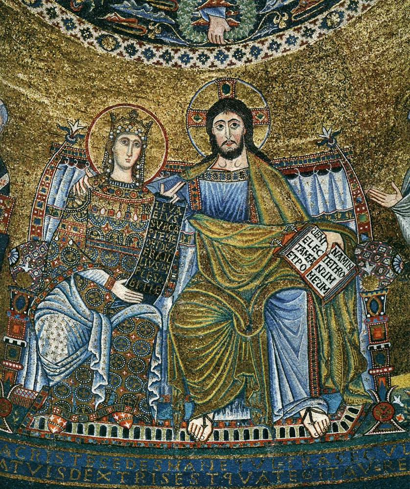
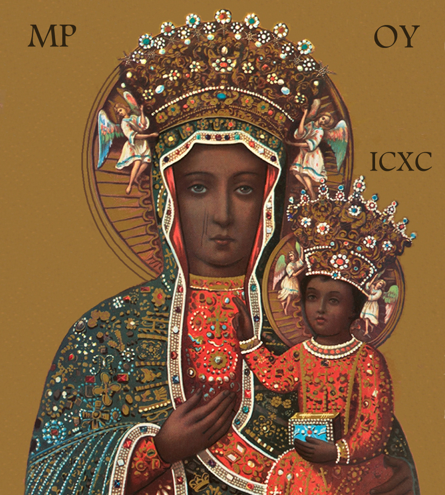
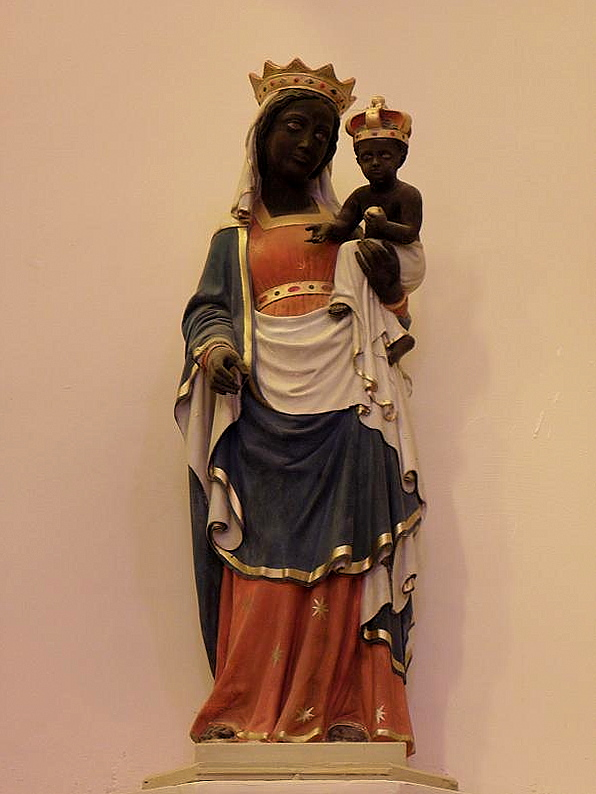

Course: Two Marys
Lecture #7: The Cult of the Virgin Mary
HISTORICAL ORIGINS:
There are many theories as to the origin of the Mary cult and the reason it is found mainly in Latin countries of southern Europe. These theories are sociological and psychological in nature, and I will only mention them here.
Sociologically speaking, those in agricultural areas are much more likely to venerate the feminine, i.e. a goddess, than urban people and Mary clearly, as we shall see, fills this gap.
Psychologically speaking, a Freudian interpretation is that men in Latin countries are much more likely to have ineffective fathers and, since they can't truly bond with their biological mother, they therefore bond with the Virgin Mary. She is safe since she is both a virgin and a mother.
However, these do not account for the fact that the cult of the virgin Mary was absent in the church during the first four centuries of the Christian era.
Even conventional histories of the church make it clear that the fourth century A.D. (the period just prior to the emergence of the Mary Cult) was a period in which a variety of new groups were absorbed into the church.
All historians agree that until the early part of the 4th century, Christianity was a minority religion, and in fact persecuted severely. Yet within the course of a single century, all this changed. Christianity became the professed religion of a majority in both East and West.
CONSTANTINE AND THE EDICT OF MILAN
The great transformation began under Constantine in 312. What the edict actually said isn't clear, but the effect was to make Christianity as legal as other religions.
Before Constantine's death in 337, other laws were passed that benefited Christianity: Christian clergy were not taxed, celibate clergy were allowed to inherit; wills could benefit the church; bishops were able to judge some legal matters; Sundays and Christian festivals were holidays, etc.
Constantine didn’t give the church any legal advantage over pagan cults, but he did over heretical or schismatic Christians. These groups could not keep property legally and Constantine would back that up militarily.
Seventy years after Constantine legal equality became legal supremacy. Pagan sacrifices were outlawed, both public & private Pagan temples were dismantled or converted to secular use. Pagan priests were no longer entitled to state support.
Citizens could no longer name a pagan cult as beneficiaries in a will; pagans could not hold office or be an army officer. Finally, the death penalty was specified for baptized Christians who lapsed into paganism.
There were lapses, as with the emperor Julian the Apostate, but by the first decade of the fifth century, Christianity had won. The fact that the Mary cult emerged immediately following this great transformation in the social status of the church cannot be coincidental.
Christianity increased in membership, and it was not just an increase in the number and proportion of people within the empire. but a change in the type of person who was now a member of the church. It was the incorporation of people from new social strata that led to the emergence of the Mary cult.
CHRISTIANITY IN PRE-CONSTANTINE ERA
So, what was the composition of the Christian church during the first 300 years? Up until recently, it was assumed that most early Christians were from the lower classes, i.e., the "poor"
However, a new consensus is emerging among historians that the early Church may well have been a middle-class movement. No one suggests it was all middle class, but many think the dominant group in the early church was middle class. Most of the poor were likely to be dependent in some way on this group.
Wayne Meeks expresses this new consensus by suggesting that both the extreme top and extreme bottom of the roman social scale were missing from the early Christian church. The "poorest of the poor" were rural, the last ones to accept Christianity (Paganus-country dweller). Christianity was an urban phenomena.
Sociologically speaking, the Roman family in the Church was typical of the middle class in ancient Rome, whether aristocratic or craftsmen and merchants, there was not an ineffective father figure thus the need or desire for a "mother goddess" would not have had any particular appeal to most early Christians. If this theory is true the absence of the Mary cult during the first four centuries is not surprising.
THE ROMAN POOR
The transformation of the 4th century changed Christianity from a middle-class movement to one that incorporated people from all levels of Roman society, including the "rural proletariat".
A modern parallel is the case of southern Italy and Spain where the father ineffective family is attributed to widespread and chronic unemployment among males in a wage economy. This has also been documented in many Caribbean societies, the poor in the U.S and Puerto Rico, etc.
In the Roman empire starting in the 1st century BC, and for the next several hundred years almost all commentators agree that several trends in Roman agriculture moved people to poverty.
First, subsistence farming was replaced by commercial farming with the rich accumulating land and money at the poor’s expense.
Second, there was a substantial increase in absentee ownership, which siphoned off to urban areas the wealth that had previously been spent in local farming communities.
These trends produced an increasing impoverishment in rural areas thus provoking (as today) a rural-urban migration that produced mobs so characteristic of the great cities of the empire
THE BIRTH OF THE MARY CULT
After the transformation of the 4th century the effects were first: there was a relatively sudden extension of Christianity to all levels of Roman Society increasing dramatically the number of poor, possibly even making them the majority.
If we grant the economic conditions discussed than many of these new Christians came from father ineffective families and a large number of males who would be open to Marian Devotion.
Thus, from the end of the fifth century onward the development of the Mary cult can be seen as the result of an interaction between the Church hierarchy and one fairly large segment of the churches new constituency, Christians drawn from the urban or rural proletariat.
So long as the Mary Cult did not directly challenge any of the central Christological doctrines of the church, the leaders would have seen in the Mary cult a way of maintaining the allegiance of these new Christians by, in effect, giving them a type of Christianity they wanted.
THE COUNCIL OF EPHESUS in 431 made the decision to name Mary THEOTOKOS, OR the God Bearer (an eastern term). After this it is agreed, Marion devotion increased dramatically.
It was because of this title that the council was held. Nestorius, patriarch of Constantinople argued that the human and divine natures of Christ were conjoined in a single nature-- mainly human. He wanted to call Mary ANTHROPOTOKOS (mother of the man) or CHRISTOTOKOS (Mother of Christ) which made more sense.
Cyril, patriarch of Alexandria, supported by the pope (Celestine), argued that the two natures of Christ were merged in a "hypostatic union". Cyril’s faction won and Nestorians were defined as heretics.
Most Christians would not understand the theological hair splitting, nor care, but what they did understand was that a bishop had tried to deny Mary a title that implied a close association between Mary and God, and that views of this bishop had been denounced by the official church.
Thus, the only important result of the council of Ephesus would have been that Mary's relatively high status in the Christian pantheon was affirmed. She became far more important than she had been at this time.
COUNCIL OF CHALCEDON 451--the impact on the cult of Mary had to do with the Tome of Leo a document purported to be written by pope Leo the great in which he set out the orthodox position on Christ and Mary.
Mary only entered it incidentally but they became the official doctrine of the church nevertheless. Leo had referred to Mary's In Partu virginity and to her perpetual virginity. This was the first time they had official endorsement by the church hierarchy meeting in council.
Thus, when the Roman proletariat flooded into the church at the end of the 4th century, they found a mother goddess who was almost completely disassociated from sexuality. The Virgin birth had always been part of the dogma and most believed in Mary's in partu and perpetual virginity.
But a doctrine advocated as official made Mary's disassociation from sexuality complete and she became even more appealing, particularly to males characterized by a strong desire for the mother-figure. The fact that Mary's status would someday even overshadow the Christ cult itself didn't occur to those at these two councils.
THE MARY CULT AND THE PASSION OF CHRIST
In those areas where the Mary cult was and is especially entrenched, a masochistic emphasis often takes the form of an intense emphasis upon the Passion of Christ, and in particular upon the scourging and crucifixion of Christ.
Given this it would be expected that the influx of the Roman rural and urban proletariat into the church in the fourth century that gave rise to the Mary cult in the fifth would be accompanied by an increased emphasis on Christ's passion. It is.
The image of Christ Crucified is so much a part of Catholic art today that it is easy to overlook the fact that representations of the crucifixion are completely absent from Christian art during the first four centuries of the Christian era.
Christ is portrayed in the catacombs etc., but never in connection with his crucifixion, or passion at all. art was symbolic, i.e., the fish, good shepherd (a common motif), or a N. T. scene such as the sermon on the mount.
Up until around 420 CE, there was a reluctance to portray the crucifixion even though the cross was in widespread use as a Christian symbol early in the 4th century.
The earliest example of the crucifixion in art comes from a church door in Rome dating between 420-440. Even here, it is not grisly, as Christ's feet are resting on the ground. The only other example is on a ivory box now in the British museum showing Christ nailed to a true cross and Judas hanging from a nearby tree in the same scene.
These were contemporary with the Council of Ephesus (431) and are the ONLY depictions of the crucifixion from the early fifth century. The relatively sudden appearance of this iconographic emphasis upon the passion in general and the crucifixion in particular coincides with the sudden influx of the Church of the Roman proletariat and the subsequent emergence of the Mary cult.
CELIBACY was the one other important feature of the post- Constantine church. It had been voluntarily embraced by many Christian clerics since the earliest days of the church.
The evidence now seems to suggest that during the Churches’ first three centuries a majority of priests and deacons (though probably a minority of bishops) were married and so not celibate
What is certain is that there were no formal regulations requiring clerical celibacy in any region of the western church until 300 when the Spanish council of Elvira imposed celibacy upon its bishops, priests and deacons. This was an isolated case applying only to Spain.
When a Spanish bishop tried to have the council of Nicaea (325) adopt a general rule requiring celibacy, the council argued that such a rule would be both difficult to administer and imprudent.
The movement to impose celibacy upon the clergy began in earnest toward the end of the 4th century. Between 384 (when Christianity was made the ONLY legal religion by emperor Theodosius) and 458 there were 13 different decrees issued by a variety of popes and local councils on the issue of clerical celibacy.
As a result of these decrees, celibacy came to be required of all clerical orders--bishops, priests, deacons and subdeacons- in all areas of the Western church by the middle of the 5th cent.
Celibacy, imposed or voluntary, is a form of masochism. It is a form of "symbolic castration" (Ironically, if you are castrated, you can't become a priest). The practice of this symbolic castration became widespread in the church during precisely the same historical period we have been discussing.
CONCLUSION
The influx of the Roman proletariat into the church during the 4th century, the relatively sudden emergence of the Mary cult in the 5th century, the increased emphasis upon the passion of Christ in the late 4th and early 5th centuries, the sudden insistence upon clerical celibacy during this same period--all these trends are inter-related in a very precise way.
If, as has been sociologically and psychologically shown by many studies, the father ineffective family structure does produce in sons this repressed desire for the mother, then with the influx of the proletariat it stands to reason that the appearance of a cult centered around a mother goddess disassociated from sexuality would arise.
CULT OF MARY FROM 6TH THRU 12TH CENTURY
However the cult of Mary began, psychologically and historically, the fact is the that the enthusiastic response of Mary as God- bearer was a decision of the whole church. She became a symbol of unity for the whole church.
The Chief catalyst to the cult of the Virgin in the west at this time was the ICONOCLAST HERESY. Under Emperor Leo III, (reigned 717-740), the first blows against the use of images and relics in Christian worship were struck by the Byzantine imperial court.
About 727 a riot took place when a revered icon of Christ over the gate of the Sacred Palace at Constantinople was removed at the emperor’s command. Leo's son, Constantine V (reigned 740- 775) called a council in 753 that officially denounced all icons in Christian cult and declared all who continued to use them outlaws.
After a little respite, orthodoxy triumphed in 843 under the Emperor Theodora (reigned 842-56) and Emperor Michael (842-67). During this time fugitives went west. Iconoclasm marks the tragic beginning of the schism between the Greek and Latin worlds. It was at this time also that the papacy emerged as a western power for it was in 756 that Pope Stephen III was given the papal state.
The image of the virgin in triumph served a twofold purpose: it asserted the orthodoxy of images themselves and its content indicated the power of the pope as the ruler of Christian hearts and minds at a secular as well as spiritual level. New churches were built and pagan buildings were taken over in a blend of defiance and pride and in all this the Virgin was held up as the personification of the church.
Faith in her intercession became so strong that in the 7th century she was depicted with Mary Magdalene encountering the resurrected Christ, a very non-biblical event.
It was no accident that Mary's ascent should take place at a time when Jesus was moving ever higher into heaven, the church was in league with earthly powers, and enemies were invading the empire on all sides.
The God-bearer, Mary, began to take on some of her son's functions: She was invoked for healing and protection, became associated within the woman in revelation "clothed with the sun with the moon under her feet and fleeing the dragon"
THE TWELFTH CENTURY
For a thousand years after the Council of Ephesus, the implications of Mary's definition as God-bearer would penetrate Europe that replaced Rome and Constantinople as a world power. Europe was emerging and not yet divided into powerful nation states but was unified principally by the church and its monasteries.
The 12th century marked the height of this Christendom and Mary's full incorporation within it. After 622 with the Arab conquests of part of Europe (Spain in 711), Mary's image was raised on banners by those who defended Europe. As it turned out The Arab conquests provided for the development of European Christendom.
Thrown on their own resources, the people of France, England, Spain and Germany began to develop pilgrimages and shrines in their own lands to compensate for their inability to visit the Holy Land.
The presence of the Mother of God seemed to unify and vitalize the Christian Story in its passage to the medieval imagination, making it acceptable across the sharp economic boundaries of feudalism.
In the 9th century wisdom was applied to Mary. Proverbs 8:22-23, the speech of Wisdom (Sophia) "The Lord begot me, the first born of his ways... from of old I was poured forth, at the first, before the earth."
In the 11TH CENTURY under Gregory VII, Peter Damian went even further connecting Mary's role not only with the birth of Christ in the flesh but with his appearance on the altar in every mass, a connection already known in Eastern Christianity. Damian asserts that both Christ and the Church come forth from Mary.
ST. ANSELM OF CANTERBURY (d. 1109)
One of the first scholastic theologians follow the early fathers in his writing but his private prayers show an intense personal devotion to Mary. He address her, unlike the early church, with the courtly title "Lady" letting us understand that for monks Mary takes the place of the feudal lady praised by troubadours and served by knights.
He takes for granted a tender relationship between Mary and her son and further believes that Mary's role as mother of God gives her partial responsibility for human salvation.
During this time the stage of Mary's activity was vast; it was she, rather than her adult son, who was the day to day link between humanity and God. Christ was more often seen in the scenes of the cathedrals separating the sheep from the goats at the last judgement, hardly an image that inspired poor human sinners.
BERNARD OF CLAIRVAUX (1090-1153)
Probably the most powerful figure in 12th century Europe he reveals the paradoxes that accompanied the growth of monastic tenderness in personal devotion to Mary. Her role, he said, was to be an "aqueduct" of God's grace, the channel all should use because God himself provided it.
Bernard's rhetoric was an immense influence in stimulating popular devotion to Mary. But he was also the guardian of the Churches’ orthodoxy, its greatest censor and power broker, including squashing Peter Abelard and having him branded heretic.
As one abbot wrote to Him: "you fast, you watch, you suffer, but you will not endure the easy ones (meaning Peter) --you do not love." Yet, paradoxically, love is what he valued most. And that love and tenderness was for the Virgin Mary.
Bernard applied every metaphor in the "song of Songs" to the Mother of God: She is the dawn that in this world precedes the sun of justice. She is the intermediary between God and man. He deserves his reputation as the first troubadour of the virgin Mary.
It was thru the influence of Bernard that a mosaic was commissioned by Pope Innocent II whom Bernard had put in power. It was the first in Rome in 300 years, was created in 1140 (col. pl 4, fig 6). It shows Christ, the lover in the song of songs, embracing his mother, enthroned by his side as his queen and his bride.

The amount of courtly verse written out of devotion to Mary exceeded that of the secular love poetry written by the troubadours. Mary fulfilled the psychological as well as theological needs of the celibate clergy by being an ideal virgin in heaven.
Many monks were "espoused" to Mary and even Anselm did not hesitate to use erotic language of the Song of songs in prayer to Mary.
O beautiful to gaze upon, delightful to love, whither do you go to evade the breadth of my heart?"
Feminine images for God were frequently used by medieval monastics. and some abbots deliberately used feminine language to speak of Christ and themselves in order to stress their common humility.
THE CRUSADES:
Bernard, in 1146, used the pulpit at Vezelay to call for the second crusade against the "Infidel". The first crusade was called in 1095 by Pope Urban II and of all the causes for which Mary's support has been claimed, the crusades seem the least appropriate.
MUHAMMAD AND MARY
Muhammed (570? — 632) ironically, regarded Mary with esteem and sympathy., The Qur’an records stories similar to those in the apocryphal "Book of James" (also known as the Gospel of James) but with significant changes.
It tells the story of Mary's birth to "a woman of Amran" who had vowed that the child in her womb would belong to Allah. She is tutored under Zacharias, who discovers that Allah sends her food. At the annunciation the angel tells Mary that it is the will of Allah that she bear a son, and she accepts.
When after giving birth, she is alone in the shelter of a palm tree, she burst out: "Oh, would that I had died before this, and had been a thing quite forgotten. Allah tells her to shake the tree and eat the dates that fall, and quench her thirst at a fountain he provides at her feet. When her relatives insult her, her newborn son speaks and defends her innocence.
In retrospect, the choice of Mary to lead the crusades points out the tragic misunderstanding that lay behind these "holy wars" for Mary is deeply honored in the Qur’an, in Islamic interpretation and in Muslim piety.
In fact, she is the only female identified by name in the Qur’an, her name appears there thirty four times far more often than in the whole New Testament.
The Arabic meaning of Mary is "The woman who loves human company and conversation". Sura 3:42 suggests she prays a kind of universal prayer and the writer asks her to do so "for us", an attitude quite similar to that of medieval European believers.
HILEGARD OF BINGEN (1098-1179)
One of the greatest mystics of the 12th century she was a mystic (a visionary), a composer and artist as well as knowing medical lore of her day. She composed music from an early age and Mary was central in her compositions.
For Hildegard, the virgin birth was as important as the cross. The Incarnation would have happened even if humanity did not sin; it was the very purpose of creation.
Instead of blaming Eve, God made use of another woman to` more thana compensate for the fault that was committed; Mary was Eve's advocate. Mary was Wisdom's sister because she was the mother and consort of the true Wisdom, Jesus.
By means of the Incarnation, Mary and Eve were now unified. "Mary IS Eve: there is only one Woman, she who was born of Adam in order to be, like Wisdom, the mirror of God's beauty and "the embrace of his whole creation". . ."At every level the feminine is that in God which binds itself most intimately with the human race, and thru it with the cosmos…”
POPULAR PIETY
Christianity could not completely efface the heathen charms and prayers that most peasants used because the tilling of the soil is the oldest and most unchanging of human occupations and the old gods stalk up and down the brown furrows, when they have long vanished from houses and roads.
There is evidence that 12th century peasants still carried out festivals recalling the old spring ritual in which a statue of the goddess was carried over the field in a cart to assure its fertility. Peasant folklore mingled the stories of Mary with those of the mother goddess who helped bring back to life the young god whose sacrifice was necessary for the growth of the crops.
This in spite of the fact Church authorities tried to destroy statues and shrines to such goddesses and taught the demonic background of the festivals. Some even felt that Bernard's Mariology encouraged the fertility cults of earlier ages to infiltrate Christian piety. And it may have.
Just as the statues of ancient goddess often show them as comforting maternal figures bearing food, so did responsibility for food and life gradually accrue to Mary. Emphasis on the Mother and her Son rather than the Father who was in heaven. reflects a degree of continuity in iconography between Mary and the earlier goddesses whose functions she now assumed.
Churches dedicated to Mary rose in Europe over earlier shrines to Celtic and Roman goddesses. for example, Chartres Cathedral was on a site consecrated to an ancient druidic cult. It was only at the dedication in 1020 that the local goddess, Belisima was dethroned and a statue of Mary holding Jesus was placed there instead.
Mary was loved by the people because she trampled on conventions, even helping a nun who ran off with her lover. She was perceived as doing things because she like to do what shocked every well -regulated authority. it was said that "only the queen of heaven had such freedom in this feudal society.
The Game of chess was brought back from Syria by crusaders who made one significant change in the rules. In the east, the king was followed by a minister. the crusaders changed the piece to give it more freedom, making it the most arbitrary and formidable champion on the board. and the called it the Queen or the Virgin.
From Antioch of Syria comes one of the most beautiful examples of a Dormition picture, i.e., a picture of the assumption of the Virgin Mary (1143) This gold mosaic is housed in a shrine built in 1143 to the Virgin by George of Antioch, admiral of the fleet to the King of Sicily. As a Greek, he had fought in the Mediterranean but employed Italian craftsmen to adorn the walls with mosaics in the Byzantine style.
In this picture of Mary's death, (Color plate IV, figure 5) Jesus gives new life to her soul, which resembles a baby in his arms while St. John lays his head on her breast and Peter mourns at her feet.
BLACK MADONNAS
Associated with the popular piety then and now are the Black Madonnas. These statues are carved from a single block of wood, light in weight and less than life size. Most the originals were painted in polychrome and overlaid with gold, but the ones linked with the greatest number of miracles were black.
They were carried in slow processions among the people-- much like the ones for the great goddess--so the people could touch Mary, hold sick children to her, etc.
There is a family resemblance but artistic diversity among them. Mary sits on a throne of wisdom with the Christ child' on her knee, but looking like a small adult, and resembling her almost exactly. She is the Byzantine God-bearer. The image came to the west largely thru manuscript illumination, as the Book of Kells (Cunneen plate 11), Here are some other poses which show the very eastern influence of this image (Cunneen plates 14, 13, 16, 12)

The most celebrated thrones of wisdom contained relics, sometimes associated with Mary. there was usually a hollow place with a door to keep them in the image. Chartres had her tunic, Le Puy her slippers, etc.
The most frequent story of the origins of black Madonna is they were found by chance in a natural setting: a bush, cave, etc. When people would try to take it to town to build a chapel, it would escape and return again and again to its original site. Finally, a chapel would be built there at the original site.
Most these Madonnas inherited the qualities of mother goddesses whom they were replacing. Diana, Hecate, and Epona, the gallic divinity of the moon and wild nature. Mary took on their power over death as well.
People didn't want to believe they were carved by human hands. Many wanted to believe that these statues, as powerful and fruitful as nature, had been present in their village, hidden in water or soil, from time immemorial.
It is impossible to draw a neat line separating pagan reverence for life from Christian imagery. Among twelfth century peasants, the bull was the biological complement of the virgin, both were fertile. thus, the finding of the images are often associated with a cow or bull finding it.
Bishops and priests might not believe as the people, but they realized that such Madonnas had enormous appeal and would bring fame and wealth to their shrines. Many were produced because of their popularity and when black Madonnas became the biggest miracle-workers, earlier statues were repainted black.

Sometimes it is not certain if a statue was originally a goddess or Mary. In Enna, a statue of Demeter and Kore was used in church at the Nativity to represent Mary and Jesus until the 19th century, when Pius IX ordered it moved.
Statues of Demeter and Isis were black because they were associated with the fertility of the dark earth, recalling the appearance of Isis at night in the beautiful vision of Apuleius. Such findings suggest that the black Madonnas were Christian borrowings from earlier pagan forms that retained the power of their models.
In the west, whether the statues were black by accident or by origin, it is clear they were preferred. White statures were painted black because this was preferred.
The feeling that icons of Mary should be black may reflect the common European memory of prehistoric millennia in which blackness stood for the life-giving, regenerative energy of the goddess, while whiteness stood for death. Meanings that are just the opposite of those the colors held in the Middle Ages.